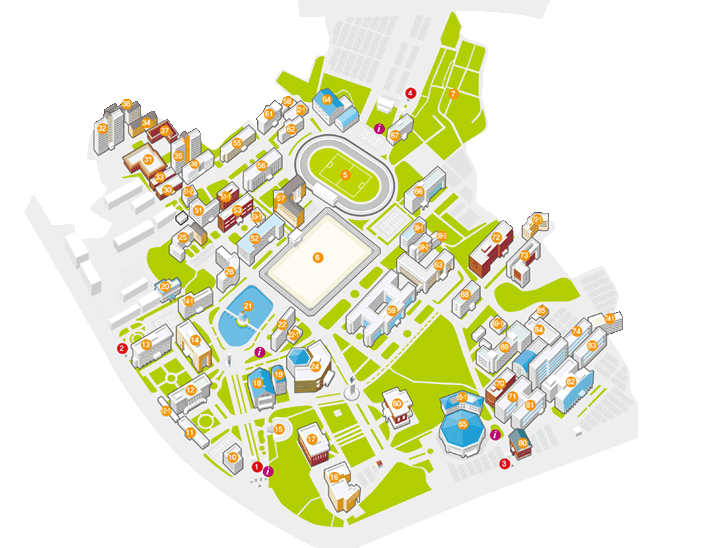
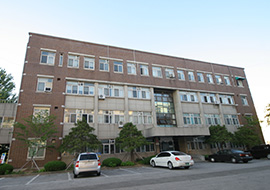
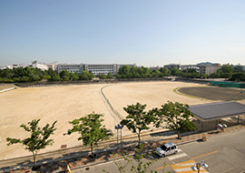

- 1 정문
- 1-1 교시탑
- 3 남문
- 4 동문
- 5 대운동장
- 6 소운동장
- 7 자연식물원
- 10 미술관Ⅱ
- 11 서예관
- 12 대학본부
- 12-1 대학본부 창고
- 13 생활과학대학
- 14 학생지원관(교양교육대학)
- 14-1 중앙도서관
- 15 노천극장
- 16 60주년기념관(평생교육원)
- 17 숭산기념관(대학교당)
- 18 체육관
- 19 대학원관
- 20 교학대학
- 21 수덕호(봉황각)
- 22 공공정책대학
- 24 학생회관
- 25 원광디지털대학교
- 26 법학전문대학원
- 30 학생생활관-용화관
- 31 학생생활관-개벽관
- 32 학생생활관-학림관
- 33 학생생활관-삼동관
- 34 학생생활관-사은관
- 35 학생생활관-보은관
- 36 학생생활관-어학관
- 37 학생생활관-청운관
- 38 글로벌교류센터
- 51 사회과학대학
- 51-1 사회과학대학 신관
- 51-2 소방행정관
- 52 조형예술디자인대학(미술대학)
- 53 경영대학
- 53-1 경영대학 신관
- 55 학군단
- 56 인문대학
- 57 새천년관
- 58 물품보관창고
- 59 창의공과대학(공과대학)
- 59-1 공과대학 기계공작실
- 59-2 공과대학 U.T.M실
- 59-3 자동차실습관
- 60 박물관
- 61 도예관
- 62 조소관
- 62-1 조소관 별관
- 63 자연과학대학
- 64 승리관
- 65 문화체육관
- 65-1 문화체육관별관
- 66 농식품융합대학(생명자원과학대학)
- 67 무빙테크노관(창업보육센터)
- 68 약학대학
- 69 의과대학
- 69-1 제생의세관
- 70 한의학전문대학원
- 71 한의과대학
- 72 사범대학
- 72-1 사범대학부속유치원
- 73 교육관Ⅰ(간호대학)
- 74 치과대학
- 74-1 제2치학관
- 80 원광문화센터
- 81 한의과대학 익산한방방원
- 82 원광대학교병원
- 83 치과대학 치과병원
- 84 원광대학교병원 응급의료센터
- 1660주년기념관
- 63과학관
- 12관리처
- 53경영대학
- 53-1경영대학 신관
- 57경영대학원
- 22공공정책대학
- 14공자학원
- 12교무처
- 14교수학습세미나실
- 1-1교시탑
- 14교수학습개발센터
- 73교육관Ⅰ
- 72교육대학원
- 20교학대학
- 14국제교류과
- 38글로벌교류센터
- 14기록물관리과
- 12기획조정처
- 3남문
- 15노천극장
- 12대외협력홍보처
- 5대운동장
- 17대학교당
- 12대학본부
- 12-1대학본부 창고
- 14대학원
- 19대학원관
- 교외도덕교육원
- 66농식품융합대학(생명자원과학대학)
- 61도예관
- 4동문
- 20동양학대학원
- 67무빙테크노관
- 65문화체육관
- 65-1문화체육관 별관
- 58물품보관창고
- 10미술관Ⅱ
- 60박물관
- 26법학전문대학원
- 19보건·보완의학대학원
- 14봉황인재학부 사무실
- 12비서실
- 72사범대학
- 72-1사범대학부속유치원
- 51사회과학대학
- 51-1사회과학대학 신관
- 14사회봉사과
- 12산학협력단
- 57새천년관
- 13생활과학대학
- 2서문
- 11서예관
- 51-2소방행정관
- 6소운동장
- 21수덕호(봉황각)
- 17숭산기념관(대학교당)
- 64승리관
- 24신문방송사
- 66식품산업기술대학원
- 68약학대학
- 82원광대학교병원
- 84원광대학교병원 응급의료센터
- 25원광디지털대학교
- 80원광문화센터
- 14여대생커리어개발센터
- 69의과대학
- 56인문대학
- 14인력개발처
- 12입학관리처
- 59-3자동차실습관
- 63자연과학대학
- 7자연식물원
- 1정문
- 59정보전산원
- 20정역원
- 74-1제2치학관
- 69-1제생의세관
- 62조소관
- 62-1조소관 별관
- 52조형예술디자인대학(미술대학)
- 14-1중앙도서관
- 59창의공과대학(공과대학)
- 59-2창의공과대학 U.T.M실
- 59-1창의공과대학 기계공작실
- 14첨단스튜디오실
- 18체육관
- 65체육실
- 12총무처
- 74치과대학
- 83치과대학 치과병원
- 14취업지원과
- 16평생교육원
- 55학군단
- 14학사지원과
- 14학생상담센터
- 14학술정보과
- 31학생생활관-개벽관
- 35학생생활관-보은관
- 34학생생활관-사은관
- 33학생생활관-삼동관
- 36학생생활관-어학관
- 30학생생활관-용화관
- 37학생생활관-청운관
- 32학생생활관-학림관
- 14학생지원관
- 14한중관계연구원
- 14한중법률연구소
- 14한중역사문화연구소
- 14한중정치외교연구소
- 14한중통상산업연구소
- 14교양교육대학
- 24학생회관
- 24학생복지처
- 71한의과대학
- 81한의과대학 익산한방병원
- 70한의학전문대학원
- 51행정대학원
경영대학
- 1층 : 경영경제연구소, 교수연구실
- 2층 : 교수연구실, 특수신분교수실, 국제공인IT자격시험센터
- 3층 : 대학원세미나실, 교수연구실
- 4층 : 영상학습실, 동아리방, 강의실
경영대학 신관
- 1층 : 동아리방, 강의실
- 2층 : 전산실
- 3층 : 봉황재고시실
공공정책대학
- 1층 : 강의실, 학생회실
- 2층 : 열람실, 통합사무실, 교수연구실, 군사학연구소
- 3층 : 경찰학연구소, 외래교원실, 경찰고시반, 공무원반정독실, 강의실, 교수연구실, 경찰행정학부사무실
- 4층 : 컴퓨터실, 대학원세미나실, 강의실
창의공과대학
- 1층 : 구조공학연구실, 실험실, 도로교통시스템실험실, 멀티미디어세미나실, 측량실습실, 도로교통시스템연구실, 학생회실, 휴게실, 교수연구실, 해안공학실험실, 강의실, 수리실험실, 지반공학연구실, 토목환경공학사무실, 환경공학연구실, 구조및재료실험실, 일반물리실험실
- 2층 : 취업상담실, 교학과, 전기/정보통신/전자/제어계측/컴퓨터학사무실, 공학교육원, 자동제어연구실, 교수연구실, 에너지 및 전력시스템실험실, 세미나실, 자동제어실험실, 전기기계실험실, 전기공학사무실, 강의실, 신호처리연구실, 컴퓨터응용연구실, 생체신호계측실, 독서실, 신생에너지실습실, 열공학실험실, 유체공학실험실, 내연기관실험실, 제어자동화연구실, 설계제도실, 공동전산실, 시스템실, 회의실, 정보전산원
- 3층 : 강의실, 전기응용신기술센터, 의공학연구실, 세미나실, 직접회로실, 교수연구실, 초고주파및광통신연구실, 디지털통신연구실, 회로및시스템연구실, 응용전자및생체공학연구실, 공동실험실, 제어공학실험실, 기계역학실험실, 기계종합설계실, 학회실, 기계자동차공학사무실, 고체역학연구실, 음향공학연구실,
- 4층 : 나노광반도체및소자실험실, 교수연구실, 무선통신연구실, 반도체공정연구실, 광전자응용연구실, 무선통신실험실, 도시및지역개발연구소, CAD/CAM연구실, 교통공학연구실, 도시계획실험실, 세미나실, 학생회실, 환경및위생공학실험실, 공동기기실, 강의실, 제어계측종합설계실, 컴퓨터그래픽스영상처리실험실, 지능정보제어시스템연구실, 로봇응용실험실
- 5층 : 설계실, 세미나실, 건축환경공학실험실, 교수연구실, 공동동아리방, 모형제작실, 컴퓨터그래픽 및 영상처리연구소, 헬스케어기술개발실, 강의실, 휴먼인터페이스연구실
창의공과대학 기계공작실
- 1층 : 기계공작실, 재료실험실
창의공과대학 U.T.M실
교시탑
- 총학생회의 발의로 1973년 3월6일 캠퍼스의 중심지에 기공되었다. 배형식교수에 의해 설계된 높이 15미터, 직경5.6미터로 6개의 기둥을 세우고 3개의 인물을 3미터 높이로 조각하였다. 전면에 원광을 상징하는 여신상을,좌우에는 교시인 지덕겸수 도의실천을 의미하는 남성상을 조각하였다. 1973년 9월에 준공되었다.
교육관Ⅰ(간호대학)
- 지하 : 실습실, 사범대고시원
- 1층 : 간호학과사무실, 도예실, 다실, 실습실
- 2층 : 실습실, 휴게실, 강의실, 세미나실
- 3층 : 어학원사무실, ESL상담실, 한국어과정교수실, 어학실습실, 강의실, 간호학과 교수연구실
- 4층 : 휴게실, 실습실, 강의실
교학대학
- 1층 : 컨텐츠개발실, 전산실, 한국문화학과, 교학대학, 교학과, 동양학대학원교학과, 세미나실, 학생회실
- 2층 : 원불교사상연구원, 원불교학과, 종교문제연구소, 정역원, 강의실, 세미나실, 명예교수실, 원불교대사전편찬실, 교수연구실
- 3층 : 열람실,강의실, 선과인격수련원
- 4층 : 시청각실, 기도실, 특수신분교수실, 교수연구실
- 5층 : 기공·요가·다도실, 세미나실, 한국문화실습실, 회화문화재세미나실, 교수연구실
남문
노천극장
대운동장
대학본부
- 1층 : 총무과, 인사관리과, 자산관리과, 문서취급소, 입찰실, 제3회의실, 입학관리과, 입학사정관실
- 2층 : 안전관리과, 재무과, 시설지원과, 총장실, 교학부총장실, 소통실, 의전과, 접견실
- 3층 : 발전전략과, 예산과, 교원인사과, 기획평가과, 이사장실, 법인사무처, 법인사업본부, 기획ㆍ감사팀, 병원경영지원처 경영지원팀
- 4층 : 연구지원과, 제1회의실, 제2회의실, 산학기획과, 대학기술이전센터, 산학진흥과, 홍보과, 총동문회
- 5층 : 노동조합
대학본부 창고

대학원관
- 1층 : 실기실
- 2층 : 외래교원실, 원우회실
- 3층 : 세미나실, 보건학과
- 4층 : 보건·보완의학대학원, 예술치료자료실, 세미나실
- 5층 : 특수아동치료실, 음악치료실, 미술치료실, 무용연극치료실
도예관
- 1층 : 일반성형실, 물래성형실
- 2층 : 디자인학부(도예전공)+C69, 일반성형실
- 3층 : 일반성형실, 유약보관실, 대학원실
동문
무빙테크노관(창업보육센터)
- 1층 : 공공기기실
- 2층 : 입주기업사무실
- 3층 : 입주기업사무실, 행정실, 소회의실, 센터장실
- 4층 : 입주업체사무실, 세미나실
문화체육관별관
- 1층 : 레슬링장, 격투기장, 스포츠과학부, 독서실, 전공실습실
- 2층 : 측정평가실험실, 체육과학연구소, 체육청소년연구소, 시청각실, 강의실, 교수연구실
물품보관창고
미술관Ⅱ
- 1층 : 보석가공실, 세공실,금공실, 귀금속보석공예전공사무실
- 2층 : 귀금속공예전공사무실, 세공실, 다이아몬드가공실, 주조실, R/P원본성형실, 교수연구실
- 3층 : Nuri주얼리마스터사업단, 대학원세미나실, 장신구디자인실, 보석감별실, 세공실, 작업실, 교수연구실
- 4층 : 사회봉사센터, 멀티미디어실, 수장고, 주얼리CAD실
조형예술디자인대학(미술대학)
- 1층 : 시청각실, 산업디자인전공실기실, 산업디자인컴퓨터실, 모형제작실, 스프레이실, 공동작업실
- 2층 : 시각정보디자인전공실기실, 컴퓨터그래픽실, 영상편집실, 염색실, 대학원실, 직조실, 촬영실, 암실, 학생회실
- 3층 : 순수미술학부(한국화, 서양화, 시각정보디자인, 산업디자인전공)사무실, 교학6과, 공동전산실, 공간미디어스튜디오실, 산업디자인공동전산실, 서양화전공실기실, 직조실, 교수연구실
- 4층 : 서양화기초회화실, 서양화전공실기실, 판화실, 석판화실, 잉크실
- 5층 : 실습실, 소묘실, 전공실기실, 한국화대학원실
박물관
- 1층 : 학예연구과, 세미나실, 수장고, 발굴유물보관실
- 2층 : 전시실, 수장고
- 3층 : 전시실, 수장고
- 4층 : 전시실, 암실, 수장고
법학전문대학원
- 1층 : 교학과, 원장실, 법학전문도서관, 외래교수실
- 2층 : 법학연구소, 의생명과학법센터, 열람실, 모의법정, 법률상담실
- 3층 : 강의실, 교수연구실, 학생회실, 학생지도센터, 상담실
- 4층 : 강의실, 교수연구실, 중형강의실
- 5층 : 강의실, 교수연구실, 컨퍼런스룸, 세미나실
사범대학
- 지하 : 강의실, 시청각실 ,휴게실
- 1층 : 교육공학/매체실습실, 한문교육과, 교학5과, 교육대학원, 중등특수교육과, 컴퓨터실, 강의실, 교수연구실, 학회실
- 2층 : 영상학습실, 독서실, 역사교육과, 국어교육과, 교수연구실, 강의실, 학회실
- 3층 : 임용고시실, 일어교육과, 영어교육과, 학회실, 교수연구실
- 4층 : 가정교육과, 교육학과, 전공실습실, 학회실, 강의실, 교수연구실
- 5층 : 유아교육과, 수학교육과, 음율활동지도실, 학습활동지도실 및 시청각실습실, 전산실, 강의실, 교수연구실
사범대학부속유치원
사회과학대학
- 지하 : 동아리방, 강의실
- 1층 : 독서실, 특수신분실, 멀티미디어실, 통합사무실(교학2과,행정대학원), 강의실
- 2층 : 고시실, 시청각실, 공동전산실, 학생회실, 전산실
- 3층 : 시청각실, 세미나실, 강의실
- 4층 : 강의실
- 5층 : 세미나실, 강의실, 동아리방, 학생회실

사회과학대학 신관
- 1층 : 컴퓨터실, 지역발전연구소, 교사편찬위원회, 교수연구실, 강의실
- 2층 : 강의실, 교수연구실
- 3층 : 대학원세미나실, 교수연구실, 강의실
- 4층 : 대학원세미나실, 사회복지전공실습실, 교수연구실
새천년관
- 1층 : 진로 및 취업상담실, 경영대학원
- 2층 : 경영대 제2전산실, 정보통신부 자원네트워크실습실, 컴퓨터실, 정보전자상거래실습실, 경제학부, 국제통상학부, 정보전자상거래학부, 경영학부, 학장실, 교학2과
- 3층 : 학생회실, 여학생수면실
- 4층 : 컴퓨터강의실, Lab
- 5층 : 기초학습튜터실, Lab실, 음영상도서실, 시청각실
농식품융합대학(생명자원과학대학)
- 1층 : 고시실, 실험실, 무균실, 시료조제실, 세미나실, 강의실, 교수연구실, 학생회실
- 2층 : 생명자원과학연구소, 공동전산실, 실험실, 통합사무실, 세미나실, 교학4과, 교수연구실, 강의실, 학회실
- 3층 : 무균실, 항온실, 실험실, 공동기기실, 시료조제실, 강의실, 교수연구실
- 4층 : 실험실, 세미나실, 강의실, 교수연구실, 원광한지산업기술연구소
- 5층 : 멀티미디어실, 도서실, 강의실, 실험실, 자연식물원사무실
생활과학대학
- 1층 : 멀티미디어실, 헤어디자인실습실, 피부관리실, 실습실, 뷰티디자인학부기자재실, 강의실, 교수연구실
- 2층 : 마사지테라실습실, 세미나실, 교학1과, 뷰티디자인학부, 가정기구실습실, 의복재료실습실, 독서실
- 3층 : 공동기기실, 시약실, 실험실, 식품영양학전공사무실, 영양교육상담실, 실습실
- 4층 : 가정아동복지학전공사무실, 건강가정지원센터/결혼이민자가족센터, 아동연구실, 가족상담실, 보육실습실, 시청각실, 컴퓨터실, 강의실, 교수연구실
- 5층 : 패션디자인전공사무실, 실험실, 복식디자인실, 텍스타일디자인실, CAD실험실, 강의실, 교수연구실, 마사지테라피연구실, 인체계측실
서문
서예관
- 1층 : 마한백제문화연구소, 수장고, 유물정리실, 문자디자인실, 옵셋실, 문서취급소, 주차관리실
- 2층 : 실기실, 서예·문자예술학전공사무실, 교수연구실, 자료실
- 3층 : 실기실, 대학원실, 선방, 강의실
소방행정관
- 1층 : 소방시설실습실, 구조구급실습실, 세미나실, 학생회실
- 2층 : 교수연구실, 학부사무실

소운동장
수덕호(봉황각)
숭산기념관(대학교당)
- 1층 : 교직원식당,전시실, 은혜의책보내기운동사무실, 유품전시장
- 2층 : 세미나실, 회의실, 대학선방, 교감실, 법당사무실, 교수협의회, 귀빈실
- 3층 : 대법당(대회의실), 방송실, 원학연사무실, 소법당
승리관
- 1층 : 야구연습장, 유도장
글로벌교류센터
약학대학
- 1층 : 대학원세미나실, 정독실, 공동전산실, 공동기기실, 실습약국실, 학장실, 교학7과
- 2층 : 실험실, 천연물화학준비실, 약제학연구실
- 3층 : 공동기기실, 동물실험실
- 4층 : 약품분석준비실, 대사분석연구실, 약물학실험실, 본초학연구실, 동물사육실
- 5층 : 세미나실, 방제학연구실, 한약약리학연구실, 한약약제학연구실

원광디지털대학교
원광문화센터
60주년기념관(평생교육원)
- 1층 : 다목적홀, 관현악실, 창작실기실, 무용연습실, 예술학부(국악, 음악, 무용)사무실
- 2층 : 다목적홀, 전공실, 무용연습실, 관악합주실, 연구실
- 3층 : 대형연습실, 개인연습실, 앙상블실, 연구실
- 4층 : 개인연습실, 대형연습실, 관현악실, 대학원세미나실
- 5층 : 평생교육원 운영관리과, 강의실 및 실습실
원광대학교병원 응급의료센터
의과대학
- 지하 : 강의실, 세미나실, 동아리방
- 1층 : 학장실, 교학8과, 의학도서실, 대학원세미나실, 공동전산실, 강의실, 학생회실, 휴게실
- 2층 : 조직배양실, 실험실, 세포배양실, 암실, 환경과학연구소, 교수연구실, 강의실, 고시실, 도서실, 전자현미경실, 해부학실
- 3층 : 분자병리실, 세미나실, 실험실, 교수연구실, 병리학교실, 전정와우센터, 진료능력개발센터
- 4층 : 공동기기실, 면역질환유전체연구센터, 실습실, 교수연구실, 저온실, 동물사육실, 방사선동위원소실
- 5층 : 약리학실험실, 약리학교실, 실험실, 교수연구실, 세미나실, 강의실, X-선 현미경연구센터, 나노방사선의료영상연구센터
원광대학교병원
- 개원연도 : 1981년
- 내과계열 : 가정의학과, 소화기내과, 호흡기내과, 내분비대사내과, 신장내과,혈액종양내과, 류마티스내과, 감염내과, 순환기내과, 소아심장과, 소아청소년과, 신경과, 정신건강의학과, 피부과, 통증치료과, 재활의학과, 뇌혈관신경과, 심뇌재활의학과
- 외과계열 : 간담췌간이식외과, 위장관대장항문외과, 유방갑상선외과, 이식혈관외과, 흉부외과, 정형외과, 신경외과, 성형외과, 산부인과, 안과, 이비인후과, 비뇨기과, 뇌혈관신경외과, 응급의학과, 외상외과
- 지원계열 : 진단검사의학과, 병리과, 직업환경의학과, 방사선종양학과, 핵의학과, 마취통증의학과, 영상의학과, 임상약리학과
- 전문센터 : 권역심뇌혈관질환센터, 종합건강증진센터, 척추센터, 암센터,신생아집중치료 지역센터, 국제진료협력센터, 응급의료센터, 소화기센터, 임상시험센터, 외상전문진료센터
- 병원규모 : 795병상 | 지상 9층, 지하 1층
인문대학
- 1층 : 인문학연구소, 열림정신연구소, 소극장, 강의실, 교수연구실, 학생회실, 동아리방
- 2층 : 학장실, 교학3과, 시청각실, 공동전산실, 학부 및 전공사무실(영어영문, 국어국문), 교수연구실, 강의실, 실습실, 세미나실
- 3층 : 학부 및 전공사무실(유럽문화, 인문, 중어중문, 사학, 고미사, 철학)시청각실, 독서실, 교수연구실, 강의실, 기초학문연구실, 학생회실
- 4층 : 학부 및 전공사무실(독어독문, 한국어문, 문예창작)학회실, 강의실, 교수연구실
- 5층 : 공연영상실습실, 문화콘텐츠연구센터, LAB실, 고시실, 연구실, 글쓰기센터, 강의실
자동차실습관
자연과학대학
- 지하 : 공동기기실, 기계실, X-선분석실, 전자현미경실
- 1층 : 교학4과, 학장실, 시청각실, 실험실, 자료실, 과학관, 공동기기실
- 2층 : 공동기기실, 실험실, 차세대방사선산업기술지역혁신센터, 통계분석실, 실습실, 수학·정보통계학부
- 3층 : 실험실, 방사선동위원소실, 반도체·디스플레이학부
- 4층 : 생명나노화학부, 실험실, 배양실
- 5층 : 줄기세포무균배양실, 실험실, 멀티미디어실, 세미나실, 공동기기실, 생명과학부

자연식물원
운영관리과 : 063-850-5043
정문
제2치학관
- 1층 : 중형강의실, PBL실, 교수회의실, 학장실, 교학8과
- 2층 : 강의실, 기초학실습실, 현미경실, 독서실, 세미나실, 정보검색실
- 3층 : 다목적실습실, 방사선사진실, 강의실, 시뮬레이션실습실, 모형제작실
- 4층 : 강의실, 실습실, 교수연구실, 휴게실, 여학생 휴게실, 학생회실
제생의세관
- 1층 : 납골당 및 분향실, 안치실, 추모실
- 2층 : 조직보관실, 실습실
조소관
- 1층 : 조소 및 합성수지실
- 2층 : 이미지표현실, 환경조각전공사무실
- 3층 : 대학원세미나실
조소관 별관
- 1층 : 가마실, 대학원실, 실기실
- 야외 : 금속조실기실
중앙도서관
- 1층 : 자유열람실1, 로비, 관장실, 운영관리과
- 2층 : 자유열람실2, 복합문화공간
- 3층 : 그룹스터디존, 디지털정보센터
- 4층 : 인문.예술자료실
- 5층 : 부관장실, 사회.과학기술자료실
- 6층 : 보존서고1/고문헌자료실
- 7층 : 보존서고2
체육관
- 1층 : 스포츠과학부사무실(사회체육학, 스포츠산업학전공), 2급 생활체육연수원, 체육청소년연구소, 생체역학실험실, 시청각실, 경기장, 샤워장, 교수연구실
치과대학
- 1층 : 고시실, 대학원 사무실, 졸업준비위원회
- 2층 : 동위원소실험실, 예방치학실험실, 구강미생물학실험실, 교수연구실
- 3층 : 강의실, 독서실, 구강생화학실험실, 매점, 대학원세미나실, 기초학실습실B(생화학)
- 4층 : 강의실, 세미나실(다목적강의실2), 교수연구실
- 1층(신관) : 다목적강의실, 공동기기실1(미생물), 치과약리학실험실
- 2층(신관) : 구강병리학실험실, 공동기기실2(재료학), 공동기기실3(해부학)
- 3층(신관) : 원내생실
치과대학 치과병원
- 개원연도 : 1978년
- 진료과목 : 치과교정과, 치주과, 소아치과, 치과보철과, 치과보존과, 구강악안면외과, 구강내과, 구강악안면방사선과
- 병원규모 : 6병상 | 지상 4층, 지하 1층
학군단
- 1층 : 체력단련실, 행정실, 생활관, 도서실, 열람실, 교보재실, 4학년 병영생활지도실
- 2층 : 단장실, 역사관, 전산실, 선임교관실, 회의실, 강의실, 3학년 병영생활지도실
- 3층 : 강의실, 교수연구실, 탈의실

학생생활관-개벽관
- 1층 : 식당, 영양사실
- 2층 : 사감실, 조교실, 침실, 샤워장, 탈의실
- 3층 : 휴게실, 샤워장, 탈의실, 침실
- 4층 : 도서실, 샤워실, 탈의실, 침실
학생생활관-보은관
- 1층 : 사감실, 외국인교수실, 식당, 주방
- 2층~13층 : 휴게실, 침실, 샤워실, 세면실
학생생활관-사은관
- 1층 : 사감실, 상담실, 외국인교수숙소, 샤워장, 조교실, 회의실
- 2층 : 독서실, 샤워장, 세면실, 침실
- 3층 : 휴게실, 샤워장, 세면실, 침실
- 4층 : 명상실, 샤워장, 세면실, 침실
학생생활관-삼동관
- 1층 : 장애인숙소, 외국인숙소, 관리실, 화장실, 탈의실, 침실
- 2층 : 상담실, 세면장, 샤워실, 침실(20개)
- 3층 : 독서실, 세면장, 샤워실, 침실(20개)
- 4층 : 휴게실, 세면장, 샤워실, 침실(20개)
- 5층 : 세면장, 샤워실, 침실(22개)
- 6층 : 독서실, 세면장, 샤워실, 침실(20개)
- 7층 : 휴게실, 세면장, 샤워실, 침실(20개)
- 8층 : 세면장, 샤워실, 침실(22개)
- 9층 : 독서실, 세면장, 샤워실, 침실(20개)
학생생활관-어학관
- 1층 : 어학실습실, 멀티미디어실, 영상/음향Lab, OA실습실, 토론실
- 2층 : 외국인기숙사, 사감실
- 3층 : 휴게실, 여자기숙실
- 4층 : 휴게실, 여자기숙실
- 5층 : 휴게실, 여자기숙실
- 6층 : 휴게실, 여자기숙실
- 7층 : 휴게실, 여자기숙실
- 8층 : 휴게실, 여자기숙실
- 9층 : 휴게실, 여자기숙실
학생생활관-용화관
- 1층 : 식당, 다목적실, 운동부감독 및 코치숙소
- 2층 : 휴게실, 세면장, 샤워실, 침실(20개)
- 3층 : 독서실, 세면장, 샤워실, 침실(20개)
- 4층 : 세면장, 샤워실, 침실(22개)
- 5층 : 휴게실, 세면장, 샤워실, 침실(20개)
- 6층 : 독서실, 세면장, 샤워실, 침실(20개)
- 7층 : 세면장, 샤워실, 침실(22개)
학생생활관-청운관
- 1층 : 상담실, 부사감실, 관장실, 통신실, 샤워장, 세면장, 침실
- 2층 : 샤워장, 세면장, 침실
- 3층 : 샤워장, 세면장, 침실
- 4층 : 샤워장, 세면장, 침실
학생생활관-학림관
- 1층 : 사감실, 상담실, 침실, 세면장, 샤워장
- 2층 : 휴게실, 샤워장, 세면장, 침실
- 3층 : 휴게실, 샤워장, 세면장, 침실
- 4층~15층 : 샤워장, 세면장, 침실
학생지원관(교양교육대학)
- 지하 : 취업전용강의실1~4, 창업.취업스터디룸1~14, 보존서고
- 1층 : 학사지원과, 교양교육대학, 교직양성과, 취업지원과, 여대생커리어개발센터, 편의점
- 2층 : 국제교류과, 사회봉사과, 대학원, 학생상담센터, 공자학원
- 3층 : LINC사업단(현장실습지원센터/기업종합지원센터/창업교육센터/창조경제사업화센터/공동기기센터), CK-l특성화사업단, CQI사업준비단, 자유열람실3A/3B, 정독실1~3, 스터디룸1~3, 도서관자치운영위원회
- 4층 : 봉황인재학부 사무실, 공무원 영상학습실, 의학도서보존서고, 법학전문도서관 보존서고, 자유열람실
- 5층 : 학술정보과, 학위논문실, 서고
- 6층 : 교수학습개발센터, 한중관계연구원, 한중법률연구소,한중역사문화연구소, 한중정치외교연구소, 한중통상산업연구소, 교수학습세미나실, 첨단스튜디오실, 기록물관리과
- 7층 : 신문자료실
학생회관
- 지하 : 학생식당
- 1층 : 서점, 복지매장, 우체국, 새마을금고, 하나은행, 소극장, 대강당
- 2층 : 학생과, 장학복지과, 특수대학원 교학과(교육/경영/행정/동양학/보건·보완의학/식품산업기술대학원), 신문방송사, 건강공제회
- 3층 : 총학생회, 동아리연합회, 학생자치기구
- 4층 : 동아리방
- 5층 : 동아리방
한의과대학
- 1층 : 멀티미디어실, 세미나실, 학장실, 교학7과, 교수연구실, 강당
- 2층 : 공동기기실, 한방진단경혈학실습실, 실험실, 열람실, 독서실, 교수연구실, 한국전통의학연구소, 세미나실, 방제학교실, 경혈학교실, 진단학교실, 원전학교실, 의사학교실
- 3층 : 본초학교실, 병리학교실, 실습실, 교수연구실
- 4층 : 약리학교실, 생리·조직실습실, 생리학교실, 분석기기실, 교수연구실, 동아리방
한의과대학 익산한방병원
- 1층 : 경영경제연구소,교수연구실
- 2층 : 교수연구실,특수신분교수실,국제공인IT자격시험센터
- 3층 : 대학원세미나실,교수연구실
- 4층 : 영상학습실,동아리방,강의실
한의학전문대학원
- 1층 : 컴퓨터실, 학생회실, 강의실
- 2층 : 교학과, 고시실, 세미나실
- 3층 : 세미나실, 한의정보학과사무실, 어학실습실, 컴퓨터실
- 4층 : 실험실, 멀티미디어실, 세미나실
- 5층 : 세미나실, 공동기기실, 방사선동위원소실, 실험실
- 6층 : 뇌질환한방연구센터, 공동실험실